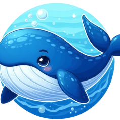

Explore a diversidade subaquática.
Embarque conosco nesta emocionante jornada subaquática e descubra os segredos do mundo marinho.
ANIMAIS MARINHOS
BALEIA
• Cantam canções encantadoras.
• Gigantes gentis nadadores.
• Comunicação complexa e única.
TUBARÃO
• bebes são fofos.
• Mães tubarões protetoras.
• Beijos amigáveis submarinos.
• seus dentes substituíveis.
GOLFINHO
• Saltos alegres graciosos.
• Mães golfinho carinhosas.
• Jogam com bolhas.
• Rostinhos sorridentes inteligentes.
POLVO
• Mestres do disfarce.
• Oito braços afetuosos.
• Jogo de esconde-esconde.
• Inteligência surpreendente expressa.
CAVALO MARINHO
• Papais grávidos adoráveis.
• Dança em casal encantadora.
• Nascem pequeninos fofos.
• Agarram-se em corais.